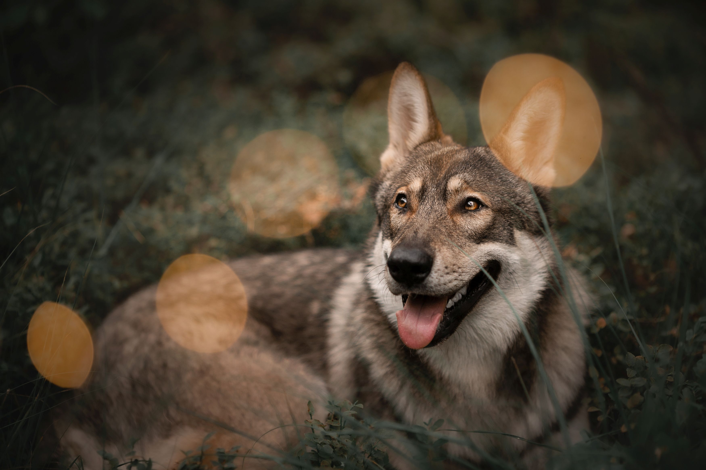
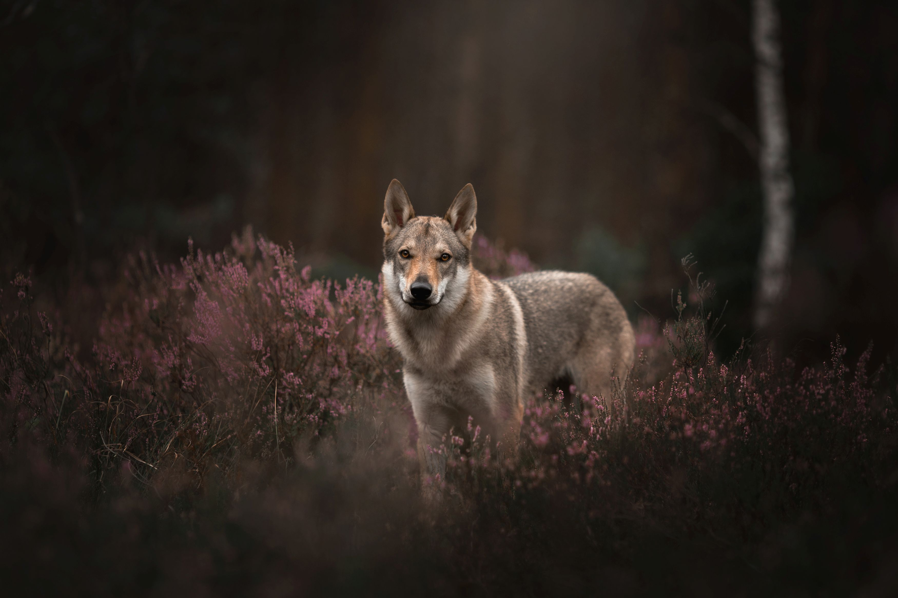

|
Każdy właściciel, który chce zachować wspomnienia o swoim czworonożnym przyjacielu, może umówić się ze mną na sesję zdjęciową, podczas której, wspólnie stworzymy niepowtarzalną pamiątkę. Może być to sesja portretowa uwieczniająca szczenięcy wygląd, czy szczególny moment psiej starości, a także sesja przedstawiająca niezwykłe lub sportowe zdolności czworonoga. |
 |
|  |
Sesja zdjęciowa odbywa się w plenerze wybranym wspólnie z właścicielem czworonoga i trwa zazwyczaj dwie godziny. Przebieg sesji jest dostosowany do możliwości oraz zdrowia zwierzęcia, a także oczekiwań klienta. W trakcie sesji zwracam uwagę na pozytywną atmosferę, która wpływa na komfort psa oraz jego opiekuna. Żadne ujęcie nie jest uzyskiwane kosztem zwierzęcia - jeśli pupil nie chce współpracować w trakcie zdjęć, właściciel może liczyć na moją pomoc oraz rady, które pozwolą na osiągnięcie oczekiwanych efektów bez przymusu oraz stresu. |
Na sesje zdjęciowe zapraszam również hodowców - w mojej galerii znajdziecie portrety kilkudniowych szczeniąt, a także zdjęcia, które zostały wykorzystane między innymi do stworzenia zapowiedzi miotów.